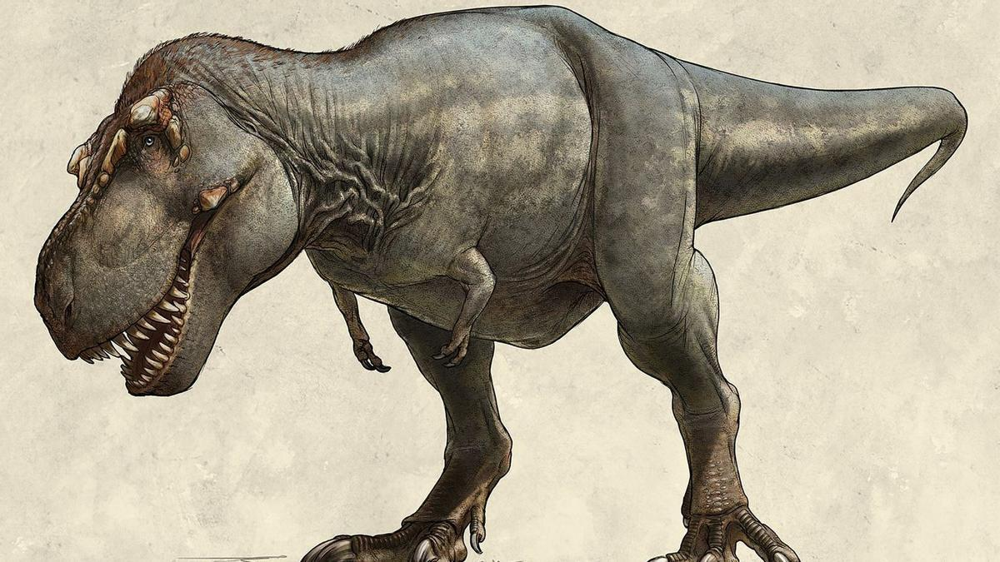
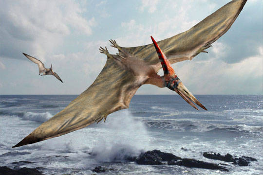
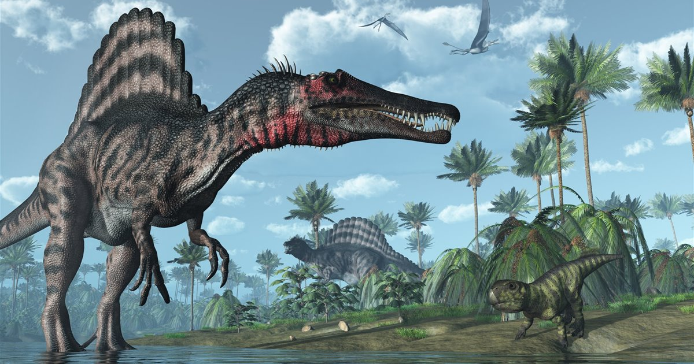
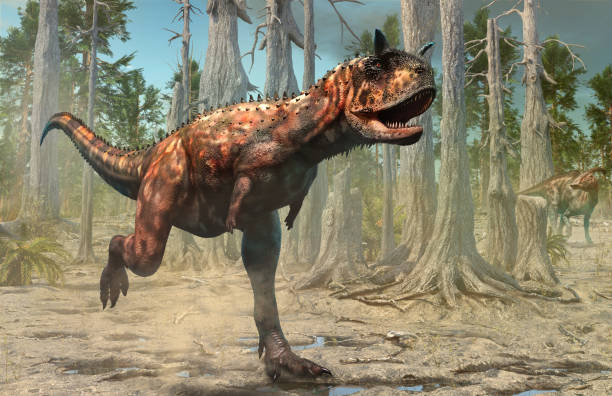

velociraptor
velociraptor
Tyrannosaurus rex (del griego latinizado tyrannus 'tirano' y saurus 'lagarto', y el latín rex, 'rey') es una especie y tipo del género extinto Tyrannosaurus de dinosaurio terópodo tiranosáurido, que vivió a finales del período Cretácico, hace aproximadamente entre 68 y 66 millones de años, en el Maastrichtiense, en lo que es hoy América del Norte. Su distribución en el continente fue mucho más amplia que la de otros tiranosáuridos; es una figura común en la cultura popular. Fue uno de los últimos dinosaurios no avianos que existieron antes de la extinción masiva del Cretácico-Terciario.
Como otros tiranosáuridos, T. rex fue un carnívoro bípedo con un enorme cráneo equilibrado por una cola larga y pesada. En relación con sus largos y poderosos miembros traseros, los miembros superiores de Tyrannosaurus eran pequeños, pero sorprendentemente fuertes para su tamaño, y terminaban en dos dedos con garras. Aunque otros terópodos rivalizan o superan a Tyrannosaurus rex en tamaño, todavía es el mayor tiranosáurido conocido y uno de los mayores depredadores conocidos de la Tierra, midiendo entre doce y trece metros de largo, cuatro metros de altura hasta las caderas, y con pesos estimados entre seis y nueve toneladas. Durante mucho tiempo fue el mayor carnívoro de su ecosistema; debió de haber sido el superpredador, cazando hadrosáuridos y ceratópsidos, aunque algunos expertos han sugerido que era principalmente carroñero. El debate de si Tyrannosaurus fue un depredador dominante o un carroñero es uno de los más largos en la paleontología.
|  |
 |
|
|  |
 |